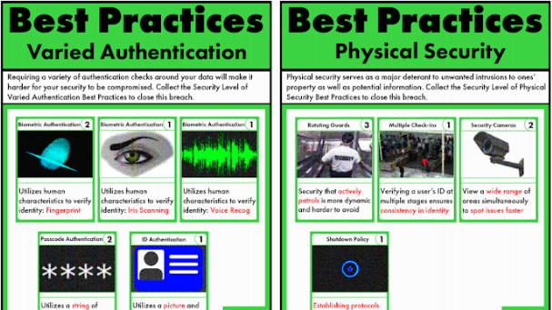

Educator’s multimedia studio
Educational Technology 0850-620, Spring 2017
Keywords: studio pedagogy, interaction design, multimedia learning, digital studio, ed tech capstone, instructional design, infosec, hackers, cybersecurity, privacy
Description: How can digital media best support learning? Working on semester-long projects, students learn about interaction and instructional design. In this hands-on studio, develop and extend skills in multimedia authoring: digital images/audio/video, and interactive web development. Apply these skills to create a original educational resources.
A studio is a place where people gather to exercise and develop skill and interest, an art, a techne. A studio provides the tools of a techne and opportunities for their use, invitations for their development, a challenge to accomplished performance within a community of peers.
— Robbie McClintock
Governments of the Industrial World, you weary giants of flesh and steel, I come from Cyberspace, the new home of Mind. On behalf of the future, I ask you of the past to leave us alone. You are not welcome among us. You have no sovereignty where we gather.
— John Perry Barlow, A Declaration of the Independence of Cyberspace
Spring 2017 Studio: Hackers
Each semester the multimedia studio features a different challenge, dealing with an important, global topic. Students will be asked to work on a semester long multimedia project that teaches some aspect of this challenge.

The Spring 2017 Studio theme is information security, hackers, and digital privacy. We believe that cyber-security is an increasingly important digital literacy, and that a broad understanding of issues in this arena are necessary for robust public discourse and democratic processes. By the end of 2016, cyber-security and computer “hacking” had become topics that can no longer be easily ignored, with high profile issues such as:
- State sponsored Russian hacks aiming to influence the 2016 U.S. presidential election
- Major security breaches, such as Yahoo Mail’s disclosure that half a billion emails were compromised
- Debates over widespread use of encryption and government “back doors” (such as the Apple/FBI showdown over unlocking the San Bernadino shooter’s iPhone)
Each student will study an aspect of information security in depth, and then complete a multimedia educational project that aims to explain and enrich our understanding of the topic.
Goals
This course is designed to challenge students to develop their abilities as instructional designers and as authors and producers of digital media for learning. Specifically, they should learn to:
- design an effective digital learning environment that is intuitive to use and follows principles of Universal Design for Learning
- develop in-depth skill in one area of digital production: video editing, graphic design, game design, computer programming, web design, etc.
- understand key concepts of instructional design, including meeting the needs of the target audience, assessing learning outcomes, and following sound and ethical pedagogical principles
- think creatively about far-reaching challenges in teaching and learning
At the end of the studio, every student will have a high quality, published multimedia artifact that will be part of their portfolio.
Recommended Books
Browne, Simone. 2015. Dark Matters: On the Surveillance of Blackness. Durham: Duke University Press Books.
Coleman, Gabriella. 2015. Hacker, Hoaxer, Whistleblower, Spy: The Many Faces of Anonymous. Verso.
Doctorow, Cory. 2010. Little Brother. New York: Tor Teen.
Harris, Shane. 2015. @War: The Rise of the Military-Internet Complex. Boston: Eamon Dolan/Mariner Books.
Krebs, Brian. 2015. Spam Nation: The Inside Story of Organized Cybercrime-from Global Epidemic to Your Front Door. Sourcebooks.
Levy, Steven. 2010. Hackers: Heroes of the Computer Revolution. Sebastopol, CA: O’Reilly Media.
McCahill, Michael, and Rachel L. Finn. 2015. Surveillance, Capital and Resistance: Theorizing the Surveillance Subject. Place of publication not identified: Routledge.
Mitnick, Kevin, Steve Wozniak, and William L. Simon. 2012. Ghost in the Wires: My Adventures as the World’s Most Wanted Hacker. New York: Back Bay Books.
Poulsen, Kevin. 2012. Kingpin: How One Hacker Took Over the Billion-Dollar Cybercrime Underground. Reprint edition. Broadway Books.
Russinovich, Mark, and Howard Schmidt. 2012. Zero Day: A Jeff Aiken Novel. New York: St. Martin’s Griffin.
Smith, Sean, and John Marchesini. 2007. The Craft of System Security. Upper Saddle River, NJ: Addison-Wesley Professional.
Online resources for information security
- Wired::Security
- The Atlantic
- DefenseOne::Tech
- Electronic Frontier Foundation
- Crypto Party
- Security in a Box
Class meetings
| Session | Date | Due |
|---|---|---|
| 1 | 1/24 | |
| 2 | 1/31 | briefing 1 |
| 3 | 2/07 | |
| 4 | 2/14 | |
| 5 | 2/21 | book talk |
| 6 | 2/28 | pitch |
| 7 | 3/07 | briefing 2 |
| no class | 3/14 | Spring Break |
| 8 | 3/21 | |
| 9 | 3/28 | midpoint critique |
| 10 | 4/04 | |
| 11 | 4/11 | |
| 12 | 4/18 | |
| no class | 4/25 | Research Day |
| 13 | 5/02 | |
| 14 | 5/09 | |
| 15 | 5/16 | final project |
Assignments
The studio format allows for frequent and ongoing evaluation of student work. An important aspect will be invited guests who will also come into the studio to consult with students and to offer informal feedback. There will be formal mid-point and final critiques.
The main, semester long project for this course is the development of a multimedia learning work related to our topic of information security. Your project should teach something worth learning and effectively use multimedia to do so. Past Studio projects include
- instructional videos
- animations
- data visualizations
- infographics
- (analog) learning games
- documentary videos
- captivate courses
- self-paced online courses
- simulations
Grading & due dates
| Assignment due | % of final grade |
|---|---|
| briefings | 10% |
| book talk | 10% |
| pitch | 10% |
| mid-term critique | 20% |
| final project | 50% |
Briefings
The two “briefing” sessions will help us develop our domain knowledge of cyber security. You will choose a specific topic of your choice related to information security and then write a short (300 word) report and create a bibliography of sources on the topic. We will discuss reports in class, but no formal presentation is required. Post your report to Slack before the class session when it’s due.
Book talk
Choose one of the books from the recommended books list (above). Read the book and prepare an 8 minute (exactly) presentation on the book. Make your presentation targeted and interesting. Unlike the briefings, for this assignment you must have a multimedia presentation to go along with your talk. Some tips for giving a great presentation:
- Write out your talk and practice it.
- Look at your audience, not the screen or your notes.
- Don’t repeat what’s on the screen.
- Have a point: like a good essay, a good talk should deliver an original, targeted point of view that you will logically and rhetorically convey.
Pitch
In this class session you will formally pitch your idea for your your final project. The purpose of the pitch is to propose your project in a way that makes it sound exciting, worthwhile, and feasible. You want to tell a good story about what you plan to develop. You should also have some sketches, mockups, sample art, etc. that may be required to make your point.
Plan for a 5 minute presentation and 3 minute Q&A session after.
Midpoint and Final Evaluation Criteria
Refer to these criteria for the evaluation of your multimedia project.
Originality & innovation
Does the project take a novel approach to teaching with digital media? Does it combine existing practices in new ways, for a new effect? Does it address an important topic, or hard to teach concept that is relevant to the topic of the studio? In other words, how important is the learning goal for the project?
Students will lose points in originality for verbatim translating of existing learning solutions to the new problem space.
Design
The design of the project encompasses the information, interaction, and visual design. Points to consider when evaluating the design:
- is the navigation consistent, logical, and easily understood?
- does the graphic design engage users?
- does the look and feel support the learning goals of the project?
- does the user interface take advantage of existing conventions, UI widgets, and user patterns?
- are there clear paths through the system to accomplish user goals?
- are system messages and instructions consistent and clear?
- does the overall design exhibit a level of professionalism and polish that supports trust by the user?
- is the design accessible?
- does it support the widest possible range of computer systems (including OS, web browser, screen size/mobile, processor speed, internet connection quality)
- can it be accessed by users with disabilities, where appropriate?
Technique
The project’s technique reflects the proficiency of the producer with the tools of the digital studio. All aspects of the project should be well tested for smooth operation. Users should not easily “break” the system. The specifics of development depend on the media. So, each of the various skills required for the course will be evaluated based on the practice of expert practitioners.
- is video composed and edited like an expert video?
- does software meet the speed and reliability that an expert would expect?
- etc.
Learning science
At the end, this studio challenge is about learning. Points in this category are awarded for exhibiting a thorough understanding of how people learn with digital artifacts. Successful projects will account for the cognitive, social, pragmatic, ethical, and aesthetic implications of their design, as it impacts learning.